CASE STUDY 02 · FINANCE APP UX
BudgetBills
Splitting the bill is a relationship problem, not a maths problem.
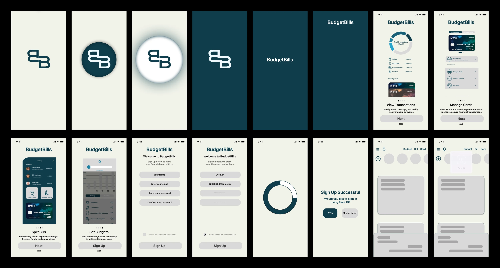
AT A GLANCE
01 / RESEARCH
Four competitors, 40 surveys, 3 interviews
I compared Pocketguard, YNAB, Monzo and Credit Karma, then ran a survey and three interviews. Under-18s were excluded, and every participant got an information sheet and a consent form.
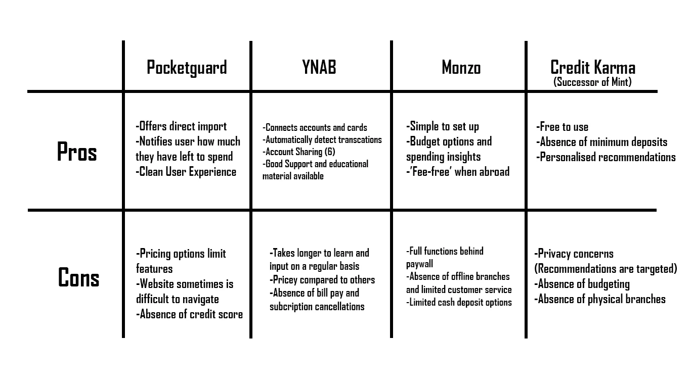
- 20% often run into disputes when splitting (8 of 40)
- 47.5% named talking about money as the challenge (19 of 40)
- 90% want splitting tied to how they already pay (36 of 40)
- 70% use no finance app besides their bank (28 of 40)
- Difficulty talking about money19
- A sense of unfairness14
- Awkwardness14
- Social status11
- Cultural expectations11
- Affordability10
Most of the top answers are social. Only one person named the transfer itself.
THE INSIGHT
Only 17.5% asked for a bill-splitting feature, yet 90% wanted splitting tied to how they pay and 45% split often. So splitting belongs inside the spending flow, not in a separate app.
The most-wanted feature overall was real-time spending tracking (31 of 40). All three interviewees checked their spending daily, wanted real-time alerts, and preferred deep teal tones.
02 / PEOPLE AND SCOPE
Three personas, four sections
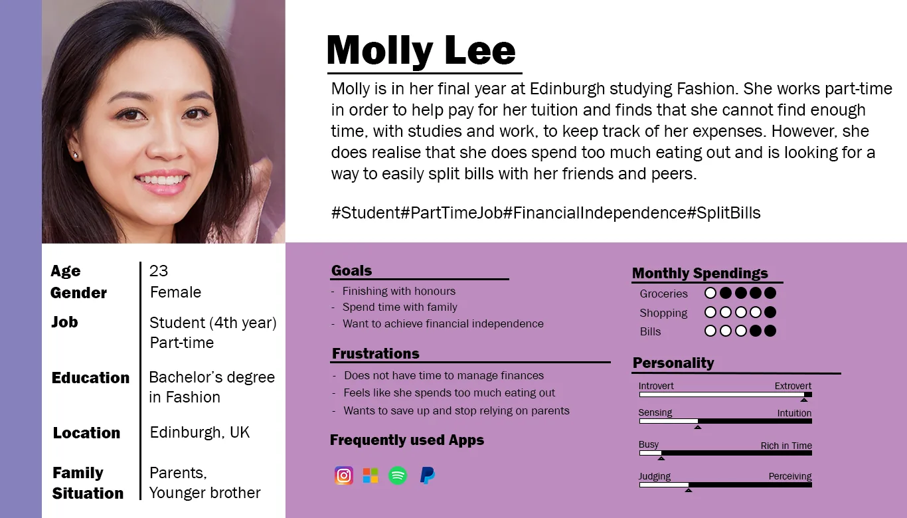
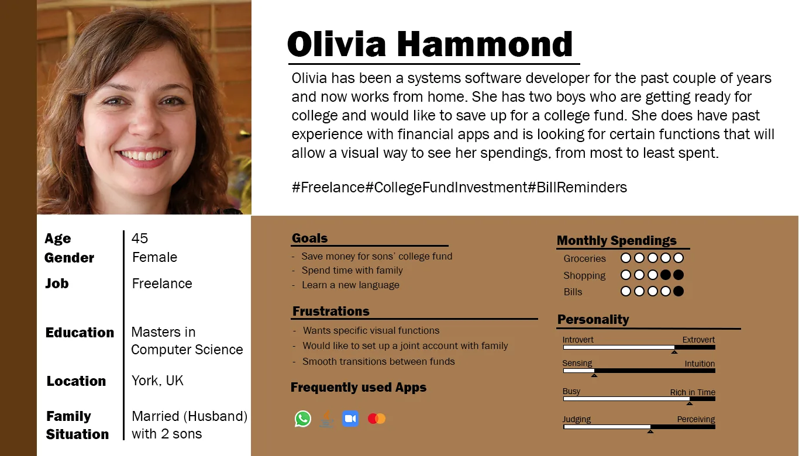
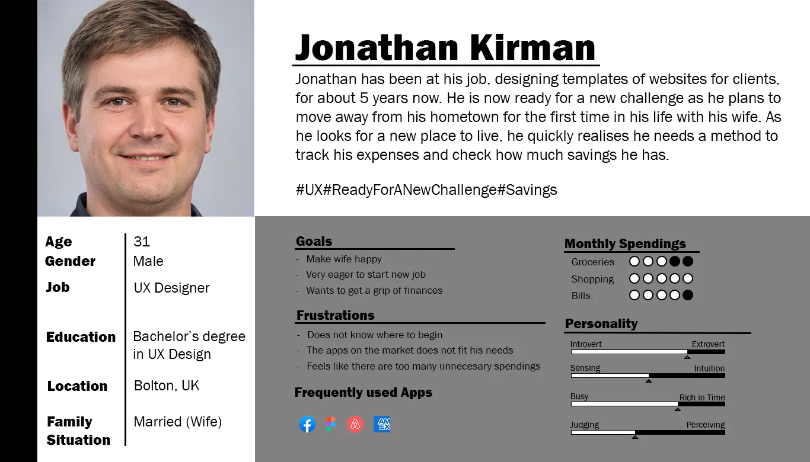
Persona portraits are generated images.
Cutting scope on purpose
Tutor feedback and a four-week build window cut the information architecture to four areas.
- Home
- Budget
- Bill
- Cards
03 / DESIGN
Paper, then Balsamiq, then Figma
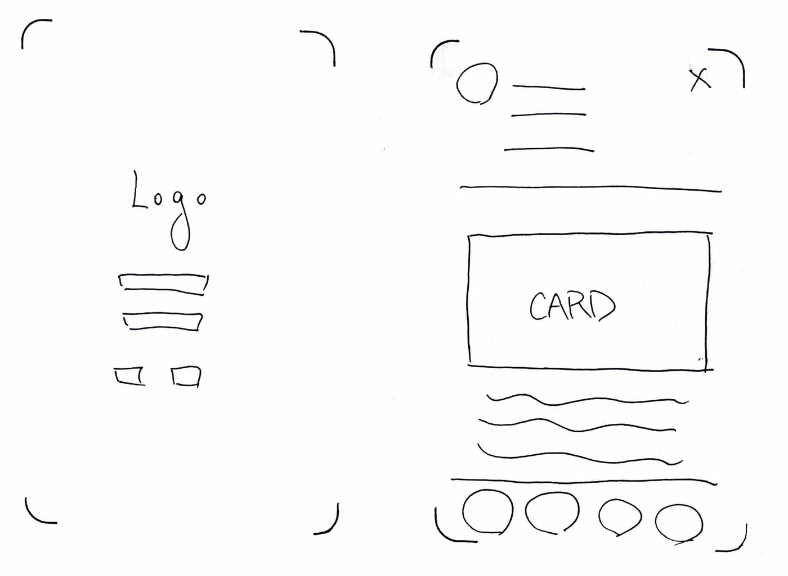
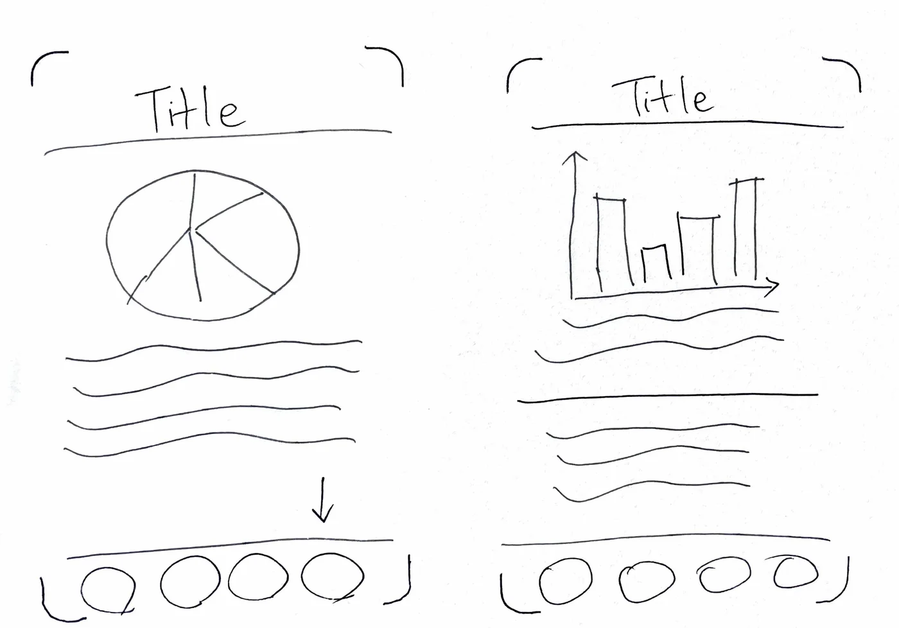
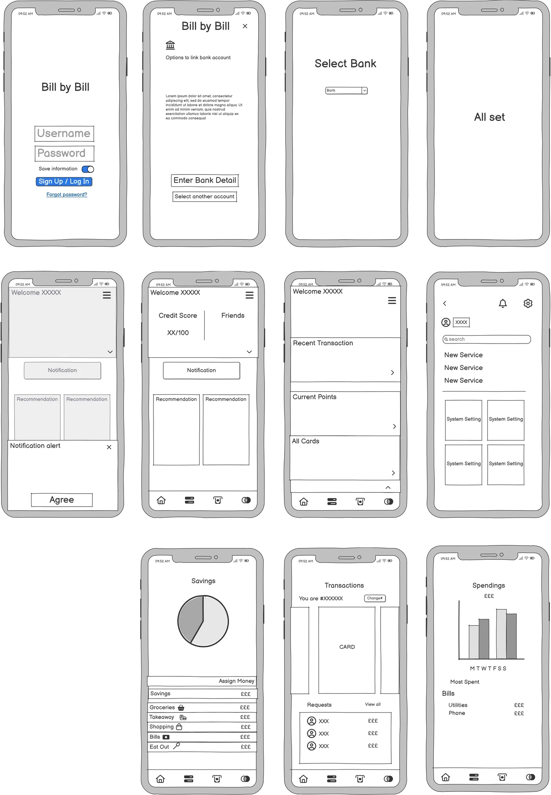
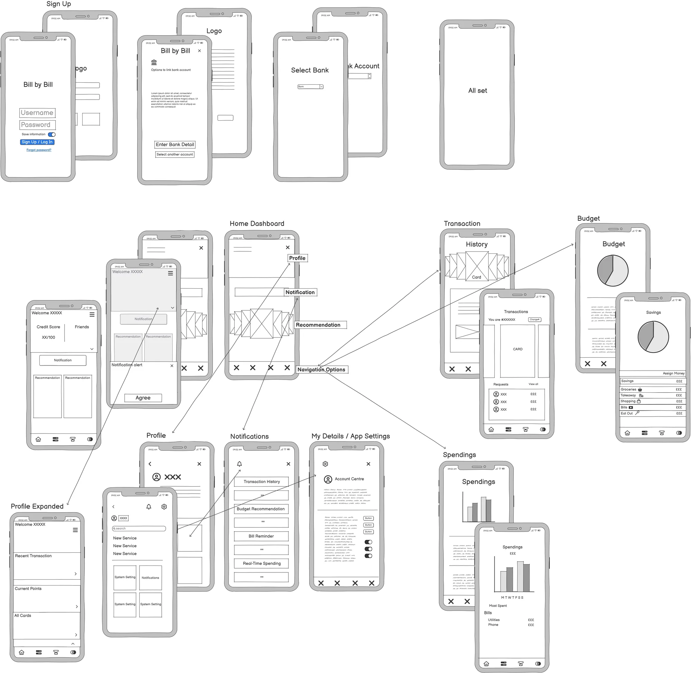
High fidelity
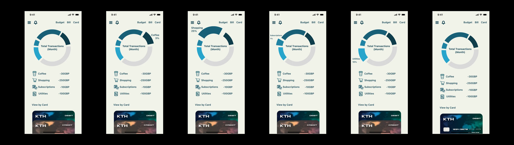
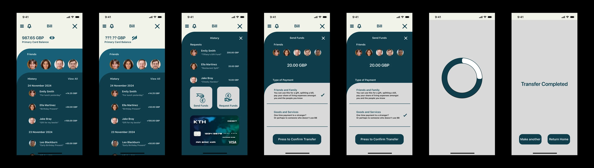
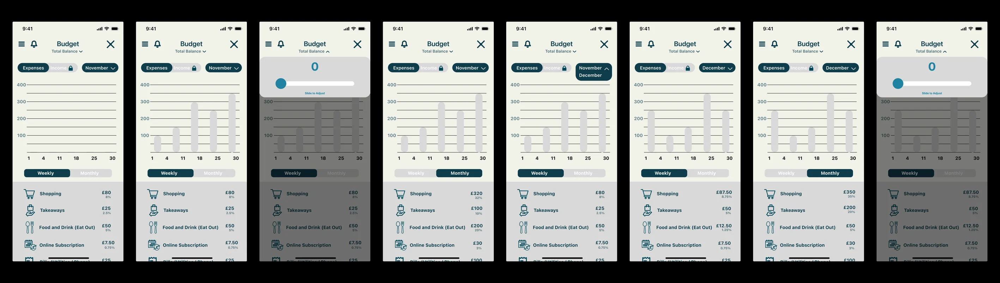
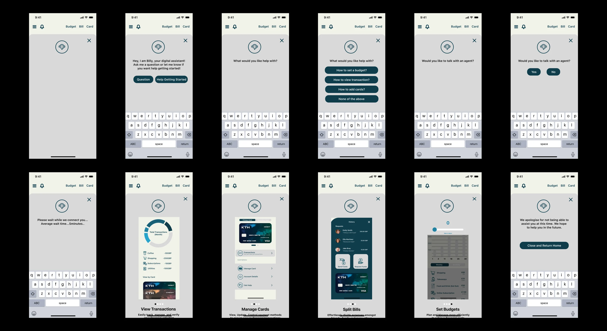
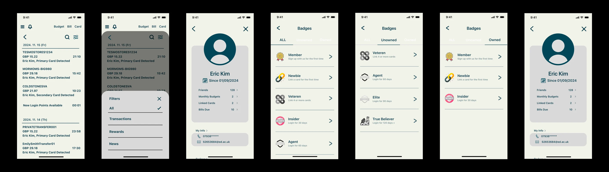
04 / USABILITY TEST
Six tasks, three people, one clear failure
28–30 November 2024, remote over Zoom and Teams. Three participants with low, medium and high experience of finance apps, about 15 minutes each. I measured success rate, time on task and errors.
- Use the chatbot3 of 3
- Check notifications3 of 3
- Set a budget3 of 3
- Send money3 of 3
- Find your badges2 of 3
- Add a card (task 4)0 of 3
Visual ratings from the three testers: 8, 8 and 8.5. Tutor feedback on the look: "readable and neat but no character to show brand."
05 / REFLECTION
Passing a task isn't the same as solving the problem.
Everyone completed the transfer, 3 of 3. But the research said the hard part was being the one who brings money up first, and nothing in my design touched that. The test measured the flow I built, not the problem I found.
WHAT THE TEST CAUGHT
An icon nobody could read
"Add card" sat behind a barcode-scan icon in the top-left corner. None of the three testers read it as "add a card": 0 of 3.
WHAT I GOT WRONG
Clean isn't the same as clear
Removing the bottom tab bar hid the obvious route to Cards, and an inactive credit-score card took the best space on the home screen.
WHAT I'D CHANGE NEXT
Words, routes, priorities
Bring back persistent navigation, label "Add card" in words, and move the credit-score card off the top of home.